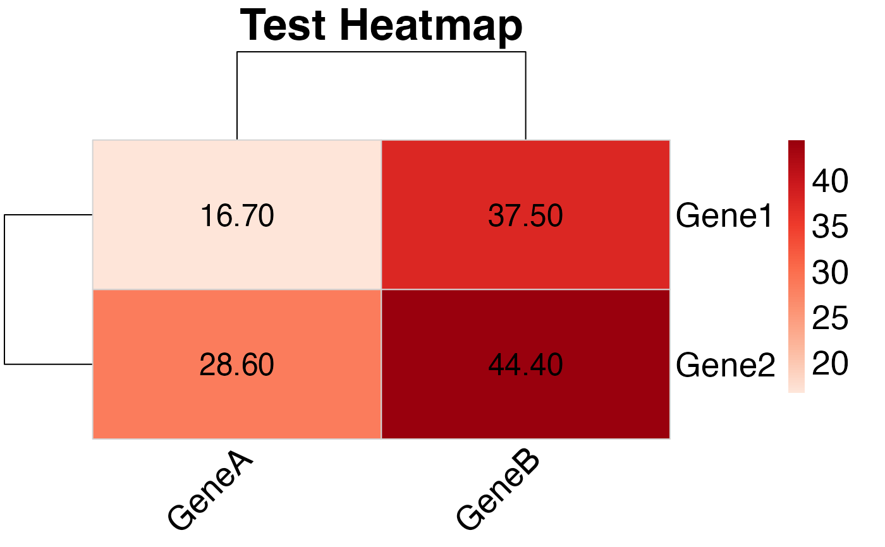
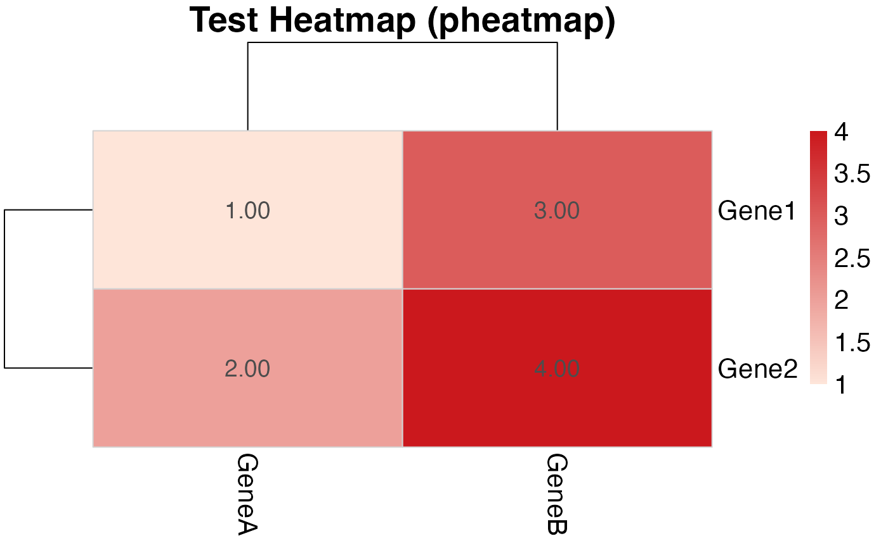

Create a formatted heatmap from PubMatrix results
Source:R/heatmap_functions.R
plot_pubmatrix_heatmap.RdThis function creates a heatmap displaying Jaccard distance values calculated from a PubMatrix result matrix, with Euclidean distance clustering for rows and columns.
Usage
plot_pubmatrix_heatmap(
matrix,
title = "PubMatrix Co-occurrence Heatmap",
cluster_rows = TRUE,
cluster_cols = TRUE,
show_numbers = TRUE,
color_palette = NULL,
filename = NULL,
width = 10,
height = 8,
cellwidth = NA,
cellheight = NA,
scale_font = TRUE
)Arguments
- matrix
A data frame or matrix from PubMatrix results containing publication co-occurrence counts
- title
Character string for the heatmap title. Default is "PubMatrix Co-occurrence Heatmap"
- cluster_rows
Logical value determining if rows should be clustered using Euclidean distance. Default is TRUE
- cluster_cols
Logical value determining if columns should be clustered using Euclidean distance. Default is TRUE
- show_numbers
Logical value determining if Jaccard distance values should be displayed in cells. Default is TRUE
- color_palette
Color palette for the heatmap. Default uses a red gradient color scale
- filename
Optional filename to save the heatmap. If NULL, displays the plot
- width
Width of saved plot in inches. Default is 10
- height
Height of saved plot in inches. Default is 8
- cellwidth
Optional numeric cell width for pheatmap (in pixels). Default `NA` lets pheatmap auto-size.
- cellheight
Optional numeric cell height for pheatmap (in pixels). Default `NA` lets pheatmap auto-size.
Details
The function displays Jaccard distance values in the heatmap cells (same as compute_jaccard_matrix) and uses Euclidean distance for clustering rows and columns. Jaccard distance is calculated as 1 - (intersection/union) where intersection is the number of common non-zero elements and union is the total number of non-zero elements. NA values in the input matrix are converted to 0 before calculation to ensure stability.
Examples
# Create a small test matrix
test_matrix <- matrix(c(1, 2, 3, 4), nrow = 2, ncol = 2)
rownames(test_matrix) <- c("Gene1", "Gene2")
colnames(test_matrix) <- c("GeneA", "GeneB")
# Create heatmap using the helper
plot_pubmatrix_heatmap(test_matrix, title = "Test Heatmap")

# Equivalent using pheatmap directly:
# Compute overlap matrix as the function does (here trivial because counts are raw)
overlap_matrix <- test_matrix
pheatmap::pheatmap(
overlap_matrix,
main = "Test Heatmap (pheatmap)",
color = colorRampPalette(c("#fee5d9", "#cb181d"))(100),
display_numbers = TRUE,
fontsize = 16,
fontsize_number = 14,
border_color = "lightgray",
show_rownames = TRUE,
show_colnames = TRUE
)
